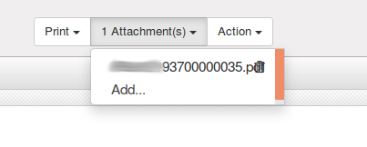
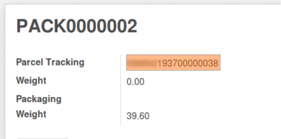

Usage¶
Now that we are set, we can use our Delivery methods in Sales orders and Delivery orders.
Labels can be generated in two ways.
- A single label for the Delivery Order
- One label per package
Here the resulting label we will be generating.

To use packages, you should enable option Record packages used on packing in Inventory/Settings.
Here is how to use our Delivery methods when creating a new Delivery Order.
Select a Carrier¶
In tab Additional Info select the delivery method we created under field carrier. This action will copy the mandatory options and the options by default.

Choose options¶
Optionally, add or remove options. Only the options you have configured in the Delivery Method will me available.
In next capture your see that only ZAW3213 is available. This is because we added in as optional option in the Delivery Method.

Delivery instructions¶
For delivery instruction (Options with ZAW code) you will find the extra fields to fill under options when extra data is required. E.g. You can define phone number for ZAW3213 for phone notification.
Generate Label(s)¶
Once your picking is in state Done, you can generate the labels. If you are using packs, one label per pack will be generated with a different tracking number.
Use the button on the top left to launch the generation.

Where is my label?¶
Your label(s) will appear in attachments of the Delivery Order.
Important
To see attachment you need Attachments List and Document Indexation (document) module.
Where can I get the tracking reference?¶
Once you have generated the labels, your tracking reference will be written:
- In Carrier Tracking Ref field on picking if you are not using packs.

- In Parcel Tracking field on package if you are using packages.
- 